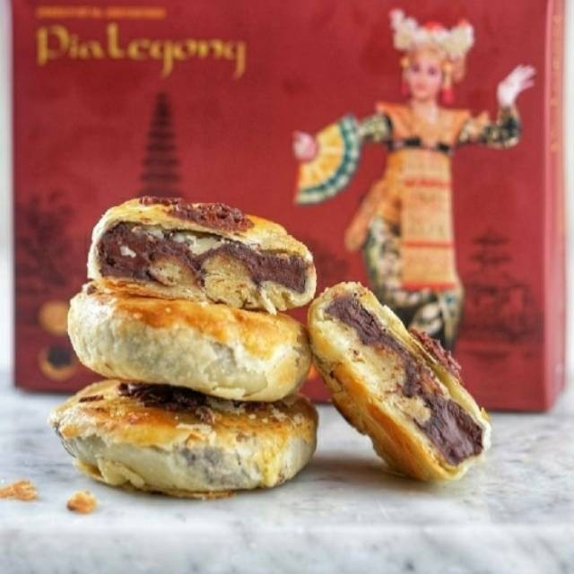

Bali merupakan salah satu destinasi wisata paling populer di Indonesia, dengan keindahan alam, budaya yang kaya, dan kuliner yang lezat. Tidak hanya terkenal dengan pantainya yang indah, Bali juga dikenal dengan oleh-oleh khasnya yang unik dan menarik. Dari kue tradisional hingga kerajinan tangan, oleh-oleh khas Bali memberikan pengalaman belanja yang tak terlupakan bagi para wisatawan.
Namun, dengan begitu banyaknya pilihan oleh-oleh khas Bali yang tersedia, seringkali membuat para wisatawan kebingungan dalam memilih oleh-oleh yang tepat untuk dibeli. Oleh karena itu, kami telah merangkum 7 oleh-oleh khas Bali yang tidak boleh dilewatkan ketika berkunjung ke sana. Jangan sampai melewatkan kesempatan untuk membawa pulang kenangan yang spesial dan unik dari Bali!
Salah satu oleh-oleh makanan khas Bali yang wajib dibeli untuk keluarga di rumah adalah Pie Susu. Pie Susu dengan pinggiran garing dan fla susu yang legit di tengahnya ini rela membuat wisawatan antre untuk membelinya. Beberapa Pie Susu yang terkenal termasuk Pie Susu Dhian, Pie Susu Enaaak dan lainnya yang menawarkan berbagai varian rasa seperti original, keju, cokelat dan masih banyak lagi.
Oleh-oleh wajib dari Bali lainnya yang sering diburu wisatawan adalah Kacang Disco. Camilan yang satu ini sangat terkenal dan sering dibawa pulang oleh pengunjung sebagai buah tangan. Kacang tanah yang digoreng dengan tepung dan bumbu ini termasuk murah meriah dan nagih. Terutama sekarang sudah banyak varian rasanya seperti pedas manis, barbeque, udang hingga keju. Anda bisa membelinya di toko oleh-oleh khas Bali, mal atau pasar tradisional.

Oleh-oleh Bali yang enak dan sering diburu oleh wisatawan selain Pie Susu adalah Pia Legong. Berdiri sejak tahun 2006, Pia Legong diproduksi setiap harinya dengan jumlah terbatas dan untuk mendapatkannya Anda harus beli langsung di tokonya, yakni di Jalan Bypass Ngurah Rai. Setidaknya ada tiga varian rasa lezat yang bisa dipilih dan disukai para wisatawan, yaitu keju, cokelat dan kacang hijau.
Berlibur ke Bali tanpa membawa oleh-oleh dari Pabrik Kata-Kata alias Joger rasanya belum lengkap. Bahkan saking terkenalnya oleh-oleh khas Bali satu ini, dia seolah sudah menjadi ikon oleh-oleh dari Bali yang wajib dibeli. Joger terkenal dengan produk-produknya seperti kaos, sandal, jaket, mug hingga gantungan kunci. Keunikan Joger terletak dari kata-kata lucu atau motivasi yang ditulis di depan atau belakang kaos.
Oleh-oleh wajib dari Bali lainnya yang enak dan halal adalah Ayam Betutu Ibu Nia. Selain bisa makan di tempat, Ayam Betutu Ibu Nia juga sangat cocok dijadikan oleh-oleh karena ini merupakan kuliner khas Bali yang legendaris dan terkenal dengan cita rasa gurih dan pedas yang bikin ketagihan. Khususnya di Ayam Betutu Ibu Nia, mereka akan menyiapkan kemasan khusus agar masakan lebih tahan lama untuk dibawa perjalanan ke luar Bali atau luar kota. Ayam Betutu Ibu Nia sangat recommended karena enak, halal, higenis dan sudah tersertifikasi.
Oleh-oleh khas Bali yang kekinian dan sedang naik daun adalah cokelat produksi lokal seperti Heavenly Chocolate Bali. Oleh-oleh enak dari Bali dengan bentuk kotak-kotak dan tekstur lumer ini diburu wisatawan karena rasanya yang premium dan kemasannya yang elegan. Coklat dengan perpaduan kakao lokal dan coklat dari Belgia ini tersedia dalam berbagai varian rasa termasuk taro, dark chocolate, milk caramel dan masih banyak lagi.
Wisatawan domestik dan mancanegara juga sering membeli oleh-oleh khas Bali yang sudah mendunia seperti Kopi Kintamani. Para penikmat kopi tergila-gila dengan Kopi Kintamani karena memiliki cita rasa unik yang sedikit asam seperti jeruk. Harga jual kopi ini bervariasi karena tergantung ukuran kemasan atau jenis kopi yang Anda pilih. Anda bisa membeli oleh-oleh enak dari Bali ini di toko oleh-oleh khas Bali atau langsung ke kawasan Kintamani.
Itu dia beberapa oleh-oleh khas Bali yang terkenal dan wajib dibeli untuk keluarga dan teman-teman terdekat di rumah. Ada beragam oleh-oleh wajib dari Bali yang bisa Anda pilih mulai dari makanan hingga pakaian yang membuat liburan Anda lebih berkesan. Beberapa oleh-oleh terkenal Bali lainnya yang juga tak boleh Anda Lewatkan, yaitu baju barong, perhiasan perak, kain Bali, kebaya Bali, tas rotan, udeng, dan masih banyak lagi. Jadi jangan lupa beli oleh-oleh khas Bali di atas jika Anda berlibur ke Bali ya. Adakah oleh-oleh wajib Bali yang jadi favorit Anda?

Hubungi
Kami